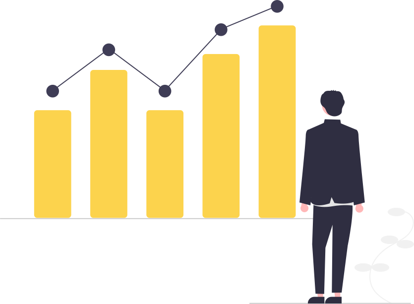

Welcome to Shrikant's component library
Hi i am new to this.
I am enjoying learning html and looking forward to learn more and more.
Point Two
I have learned javascript in the first lesson.
Point Three
Previously i have coded a little bit in python. Had built a chatbot using numpy two years ago.
fluid container
this is going to be a fluid container. It will go till the end of the page.
Center container
This text will be in between the page and it is not happening i dont know why lets see what happens
Links
Shrikant's_website
secondarylink
@lists
unordered list
- Item one
- Item two
- Item three
Unordered inline list
- Inline item one
- Inline item two
- Inline item three
Reverse Ordered List
this is going to be a reverse list. it will show content in reverse if we use css
- milk
- eggs
- break
Navigation
Header

Invest your in learning and

A DOG's Photo
Section
White Background
This will have white background
Off white background
this will have gray background
Footer
HI I WANT THIS TO BE BOLD.